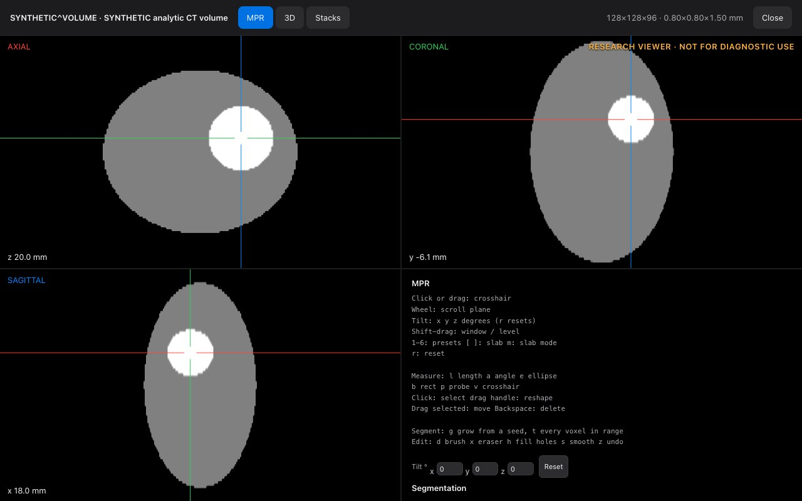
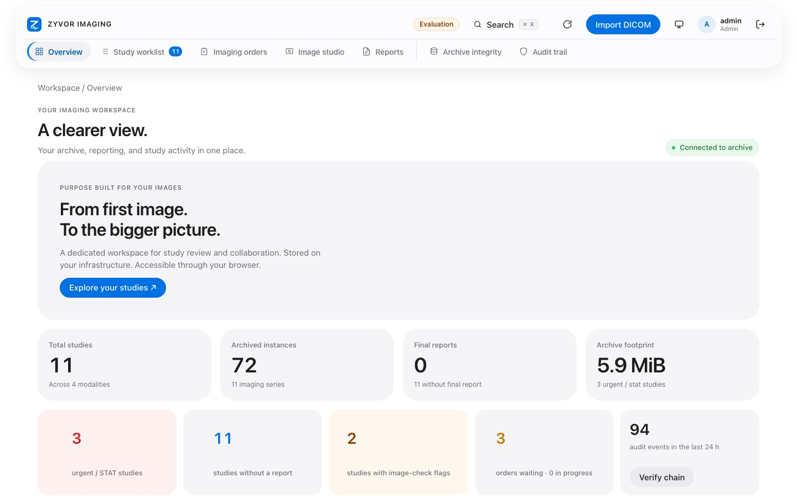
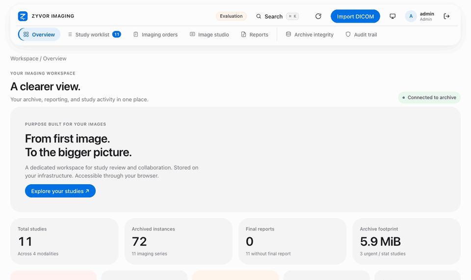
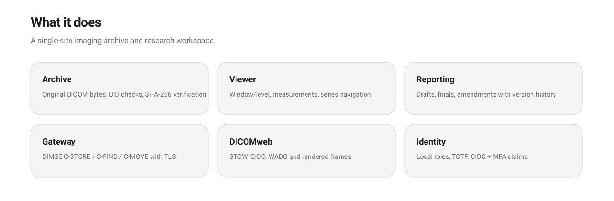
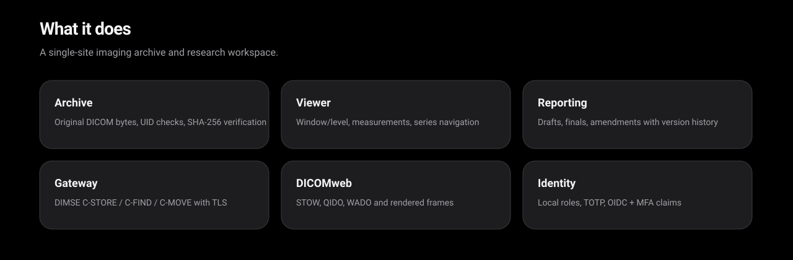
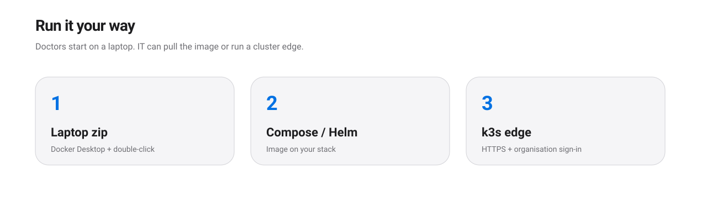
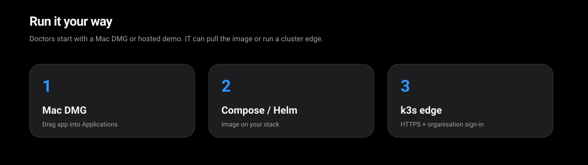

Archive, review and report on your infrastructure. A research viewer built for evaluation, now with MPR, 3D and segments. You do not need to be technical to try it: open a link, or drag one app into Applications, and look at made-up patients.
Tick them off as you go. Everything below is in version 0.4.0 (the viewer part is in the live demo section above); if you were sent a demo link, ask which version it runs.
Look around · 3 minutes
On Overview, see the study counts and the tiles that say what needs attention.
Open Study worklist. Try the search box, then switch between the list and the picture grid.
Click a study. In the viewer, scroll through the images and drag to change brightness (window/level).
Try the safety features · 4 minutes
Find a small amber badge such as 1 check or name differs on the worklist and click it.
In the study view, read the Image checks panel and the Prior studies list. Does it tell you what you would expect?
If your role allows it (radiologist or admin), press De-identified…, read the preview, and download the pseudonymised copy.
Tell us · 3 minutes
If your role allows it, type a short draft report and save it.
Write down anything that confused you, was slow, or that you expected and did not find.
Right-click (or Control-click) the app and choose Open, then confirm. You only need to do this the first time.
Docker says it is not running
Open Docker Desktop and wait until the status says it is running (this can take a minute). Then double-click the installer again.
My browser did not open by itself
Open your browser and go to http://127.0.0.1:8080. That address is only your own computer.
I do not know my login
If you used the zip, open DEMO-LOGIN.txt in the unzipped folder. For a demo link, reply to our email and we will resend it.
The page is blank or stuck
Reload the page, or try another browser (Chrome, Safari or Edge). If it is still stuck, tell us what you clicked last.
I would rather have someone walk me through it
Of course. Email sales@zyvor.dev and we will book ten minutes.
Live demo
See it running. Then run it yourself.
Watch a thirty-second tour of the real application, then try the same thing on your own machine in about two minutes, or ask us for a hosted link. Every study is a made-up phantom.
Run the live demo on your computer
Needs Docker Desktop (Mac or Windows) running once. This starts the real application with made-up studies, including the phantom volume the viewer uses. Nothing leaves your computer.
Loading the command…
Paste it into a terminal (Terminal on a Mac, PowerShell on Windows). The first start downloads the image.
Open http://127.0.0.1:8080 (an address that only exists on your own computer). Sign in as admin with the password shown next to the command.
Stop it with Ctrl+C. Nothing is kept unless you add a data volume.
A new password is made in your browser each time you load this page; it is never sent anywhere. Prefer no terminal? Use the Mac app or the zip, or ask for a hosted link.
Five things to try in the viewer
Open the phantom. Worklist → search SYN-VOL → open it → press MPR / 3D.
Find the sphere. Click the bright ball in the axial view; the other two planes follow the crosshair.
Tilt the planes. Type 30 into the Tilt boxes, then press Reset.
Grow a segment. Press g and click the ball, then x to erase, h to fill holes, z to undo.
Go 3D. Open the 3D tab, drag to rotate, press 1–4 for presets and move the clip sliders.
The advanced research viewer
A viewer we wrote ourselves.
New in 0.4.0. Written for this product, from the DICOM standard, in plain browser code: no third-party viewer inside. Research use only.

MPR · made-up phantom
Axial, coronal and sagittal planes with a shared crosshair. Click or drag to move it; scroll to step through a plane.
MPR and tilt
Three linked planes, thick slabs, and all three planes tilted together about the patient axes. Checked against a phantom with known shapes and sizes.
3D, in colour
Volume rendering, MIP, MinIP and average on WebGPU or WebGL2, with a clip box and your segments in colour. It drops to MIP by itself on a slow computer.
Stacks
Several series side by side (1×1 to 2×2), placed by a hanging protocol, scrolling together by position in the patient.
Measure and segment
Length, angle, ellipse, rectangle and probe with Hounsfield statistics; segments by region grow or threshold, then brush, eraser, fill holes, smoothing and undo. Saved with the series.
DICOM in, DICOM out
A Structured Report of measurements and segments, a DICOM Segmentation download, and Segmentation objects from elsewhere drawn over the images.
Our own decoders
JPEG, JPEG-LS, JPEG 2000 and High-Throughput JPEG 2000 decoded in the browser by code written for this product.
How it was checked
On a made-up phantom with known answers, against images from independent encoders, and with the command-line tools of DCMTK and an independent DICOM validator.
What is not shown
No clinical validation. No comparison with other viewers. No third-party viewer has opened our Segmentation or Report files yet. Only synthetic data was used. Read the details.
ArchiveOriginal DICOM with SHA-256 verification
ViewerMPR, 3D, stacks, measurements, segments
ReportDrafts, finals and immutable revisions
GatewayDIMSE store/query/move with AE allowlist
Built for imaging workflows
One workspace from ingest to report.
Technologists
Ingest from scanners over DIMSE or DICOMweb STOW. Calling-AE allowlists and TLS where you need them.
Radiologists
Worklist, research viewer and reporting with drafts, finalisation and amendments — not a diagnostic workstation claim.
Operators
Compose for a laptop, Helm for a cluster, or a k3s edge with HTTPS and organisation sign-in.
See it
Real screens, synthetic studies.
Captured from the running application. Every name and number shown is synthetic.

Overview · light · synthetic data
In motion
A short tour: the picture grid, a name-differs badge that jumps to prior studies, the de-identified export preview, search and image checks.

What's new
A research viewer of our own.
New in version 0.4.0, released 25 October 2026.
MPR, 3D and stacks
Linked planes you can tilt, volume rendering with a clip box, and several series side by side with scrolling linked by position.
Measure and segment
Measurements and segments saved with the series and editable: region grow or threshold, brush, eraser, fill holes, smoothing.
DICOM Segmentation and Report
Download or store a Structured Report and a Segmentation object. Binary and fractional Segmentations from elsewhere are drawn over the images.
Decoders written here
JPEG, JPEG-LS, JPEG 2000 and High-Throughput JPEG 2000 in the browser, checked against independent encoders.
Checked with DCMTK
The scanner gateway is exercised with DCMTK's echo, store, find, get and move tools, and Segmentation intake is fuzz-tested.
Fixes
The Mac and Windows installers and the Mac app now say 0.4.0 and pull the 0.4.0 image.
Also in 0.3.x: safer sharing, fewer surprises
Wrong-patient radar (a patient ID under two names gets a badge and a warning; one click shows the priors). Image checks for CT, MR and X-ray, and a warning when text looks burned into a picture: checks, not diagnoses. De-identified export as a pseudonymised research copy, single or grouped, not a certified de-identification. Filters and thumbnails by date and tag. Optional AI helpers (off by default; they need a model your IT team runs). Mac app with priors, the banner and export.
Capabilities
What ships in the engineering release.


DICOM archive
Byte-for-byte storage, UID hierarchy checks, duplicate handling and integrity scans on your volume or bucket.
DICOMweb
STOW, QIDO, WADO, metadata, bulk data, frames and rendered PNG — for tools that speak the web APIs.
Scanner gateway
C-ECHO, C-STORE, Study Root C-FIND and C-MOVE with calling-AE allowlist; TLS for non-loopback listeners.
Identity
Named roles, optional TOTP, and OIDC authorization code with PKCE. Organisation sign-in on the k3s edge.
Security posture
Controls you can point at.
Sessions hashed. Mutations origin-checked. Audit recorded. OIDC uses PKCE. See the private product docs for depth.
Browser sessions
HttpOnly cookies, Secure when TLS terminates at the edge, SameSite, and hashed session identifiers on the server.
OIDC
Authorization code with PKCE S256, state, nonce and verified RS256 claims. MFA claim requirement is configurable.
Objects
Immutable write path with checksum verification on read. Portable backup tooling for local and shared backends.
Doctors start with the Mac DMG or a hosted demo. IT can run the binary zip, pull the image, or stand up a cluster edge.


Mac DMG / laptop zip
Drag the notarized Mac app into Applications, or use Docker Desktop once with the air-gap zip — seeded synthetic studies. No GitHub token.
Registry pull
IT can pull the published GHCR image when the package is public, or use FluxVM on Apple silicon.
Your k3s / k8s
One command on your cluster: NodePort token login, or full Envoy + Keycloak HTTPS edge — both auto-seed synthetic studies.
Honest limits
What this is — and is not.
Research viewer
Not validated for diagnostic decisions. No MPR/3D diagnostic workstation claim, and no comparison with other viewers.
Synthetic data
Built and tested with synthetic data only. Do not load real patient studies into a public evaluation.
Not certified
No clinical validation or regulatory certification claim (HIPAA, MDR, FDA, etc.).
FAQ
Straight answers.
Is this for diagnosis?
No. The browser viewer is a research viewer for evaluation. It is not a certified diagnostic workstation.
Where does the software live?
The product repository is private. This site is the public marketing surface and hosts evaluation releases — Mac DMG, binary zip, screenshots, and contact. No application source.
How do we evaluate?
Ask sales for a hosted demo (browser only), download the Mac DMG (drag to Applications), or use the binary zip (Docker Desktop + double-click installer). Ignore automatic “Source code” archives. Passwords are never published here — sales sends logins privately.
I am a doctor — what do I click?
Fastest: email sales for a hosted link. On a Mac: download the DMG → drag Zyvor Imaging into Applications → open → paste the Base URL and password from the sales email. Then test: Worklist → open a study → research viewer. Synthetic data only; not for diagnosis.
Do I have to install anything?
Not for the demo link: it opens in your browser. The Mac app is a normal drag-to-Applications install. Only the "run it on my own PC" option needs Docker Desktop, once.
Can I try it with my own patients' images?
Please do not. This is an engineering release tested with synthetic data. Use the sample studies, or ask us for more synthetic ones.
What do the AI features do, and are they on?
They are off unless your IT team connects a model they run. They help with search and wording, never with diagnosis, and nothing is saved until you press Insert. See the product documentation we send with your evaluation.
How do I give feedback?
Use the "Send feedback" button in the test checklist, or email sales@zyvor.dev. Tell us what confused you; that is the most useful thing.